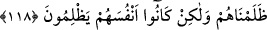
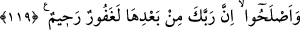

118. Sana anlattıklarımızı, daha önce yahudi olanlara da haram kılmıştık. Biz
onlara zulmetmedik, fakat, onlar kendilerine haksızlık ediyorlardı.
“Sana” “Yahudilere bütün tırnaklı hayvanları haram kıldık. Sırtlarında yahut
bağırsaklarında taşıdıkları ya da kemiğe karışan yağlar hariç olmak üzere sığır ve
koyunun iç yağlarını da onlara haram kıldık.” (el-En‘âm, 6/146) âyetiyle
“anlattıklarımızı, daha önce” yâni bu âyet nâzil olmadan önce veya bu ümmete haram
kılınmadan önce “yahudi olanlara da” önceki ve sonrakilerden başkalarına değil,
sadece yahûdîlere “haram kılmıştık.”
Bu durumda âyet, yahudilerin gerçek dışı yalan ve iftiralarını reddederek daha önce
geniş olarak zikri geçen haram kılınan şeylerin onlara hasredildiğini te’yid eder. Çünkü
onlar: “Biz bunların haram kılındığı ilk kavim değiliz. Daha önce İbrahim, Nuh ve
onlardan sonrakilere ve nihâyet bize de haram kılındı.” diyorlardı.
“Biz” bu haram kılma ile “onlara zulmetmedik, fakat, onlar” cezalandırılacakları
şeyleri yaparak “kendilerine haksızlık ediyorlardı.” Nitekim onların bu durumuna şu
âyette işâret edilmektedir: “Yahudilerin yaptıkları zulümden, bir de çok kimseyi
Allah yolundan çevirmelerinden, menetmelerinden dolayı kendilerine (daha önce)
helâl kılınmış bulunan temiz ve iyi şeyleri onlara haram kıldık.” (en-Nisâ, 4/160) Şu
âyet de taşı onların ağzına kapamıştır: “Tevrat indirilmeden önce İsrail’in kendisine
haram kıldığı şeyler dışında, İsrailoğulları’na bütün yiyecekler helaldi. De ki:
“Doğru iseniz, Tevrat’ı getirip okuyun.” (Âl-i İmran, 3/93)
Rivâyet edildiğine göre Rasûlullah (s.a.) onlara bunu söyleyince şaşırdılar ve Tevrat’ı
çıkarmaya cesaret edemediler. Nasıl çıkarsınlar ki Allah Teâlâ Tevrat’ta
İsrailoğulları’nın zulüm ve taşkınlıklarına bir ceza olsun diye bazı helal rızıkların
kendilerine haram kılındığını açık bir şekilde beyan etmektedir. Burada haram kılma
konusunda onlarla diğerleri arasında farka açık bir tembih vardır.
119. Sonra şüphesiz Rabbin, cahillik sebebiyle kötülük yapan, sonra da bunun
ardından tevbe edip durumunu düzeltenleri (bağışlayacaktır). Çünkü onlar tevbe
ettikten sonra Rabbin elbet çok bağışlayan, pek esirgeyendir.
“Sonra şüphesiz Rabbin, cahillik” gaflet, bilgisizlik ve işlerin sonunun nereye
varacağını düşünmemek “sebebiyle kötülük yapan, sonra da bunun” bu kötülüğü
işlemenin “ardından tevbe edip durumunu düzeltenleri” amellerini ıslâh edip salah
yoluna giren kimseleri bağışlayacaktır.